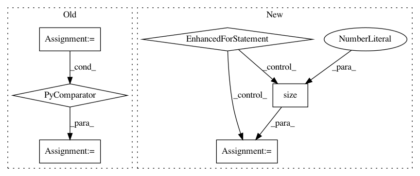

b6240c06fb49020e2d51703a1fcfddba7e27297d,bindsnet/network/network.py,Network,run,#Network#Any#Any#,229
Before Change
input_time_dim = {k: input_time_dim for k in inpts.keys()}
// Keep around a list of slices for each input.
time_slices = {k: [slice(None)] * inpts[k].dim() for k in inpts.keys()}
// Get input to all layers.
inpts.update(self.get_inputs())
After Change
// Dynamic setting of batch size.
if inpts != {}:
for key in inpts:
if inpts[key].size(0) != self.batch_size:
self.batch_size = inpts[key].size(0)
for l in self.layers:
self.layers[l].set_batch_size(self.batch_size)
for m in self.monitors:
self.monitors[m].reset_()
break
// Effective number of timesteps.
timesteps = int(time / self.dt)
// Get input to all layers.
inpts.update(self.get_inputs())
In pattern: SUPERPATTERN
Frequency: 3
Non-data size: 6
Instances
Project Name: BindsNET/bindsnet
Commit Name: b6240c06fb49020e2d51703a1fcfddba7e27297d
Time: 2019-06-21
Author: djsaunde@umass.edu
File Name: bindsnet/network/network.py
Class Name: Network
Method Name: run
Project Name: Scitator/catalyst
Commit Name: f4beaac559e00a3676d942dc7e8fea69efc01cfe
Time: 2020-11-30
Author: raveforlive@gmail.com
File Name: catalyst/metrics/avg_precision.py
Class Name:
Method Name: mean_avg_precision